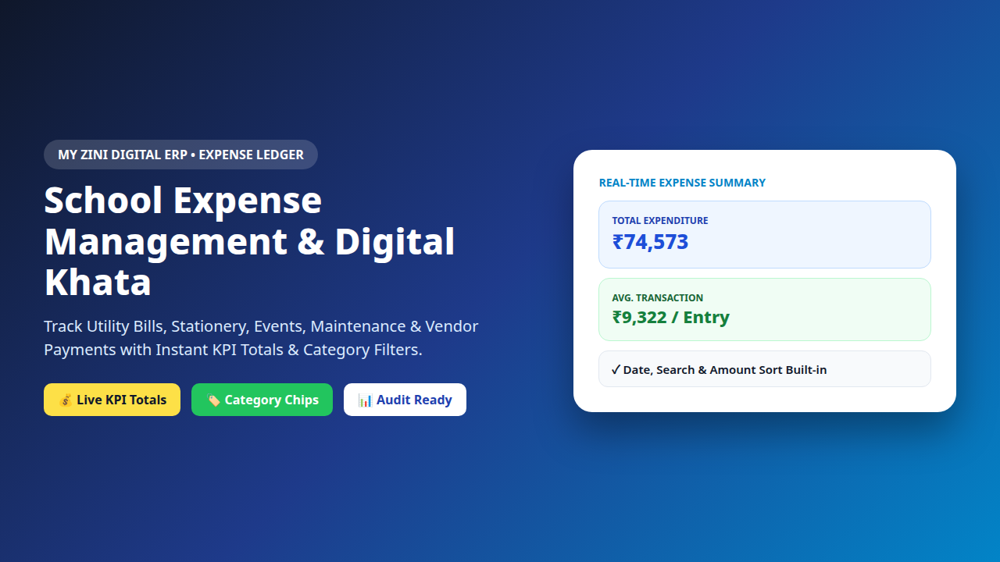
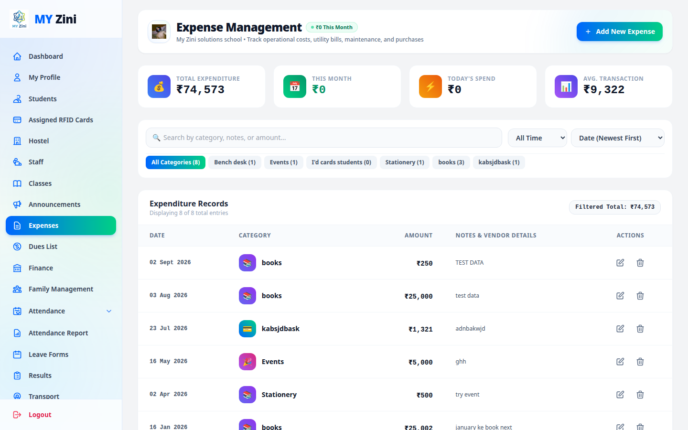
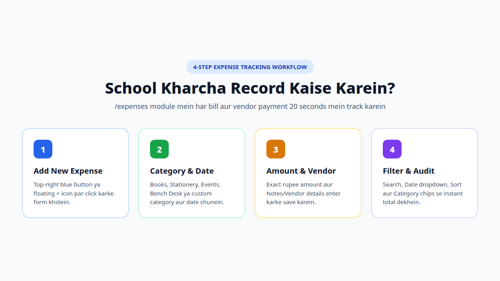
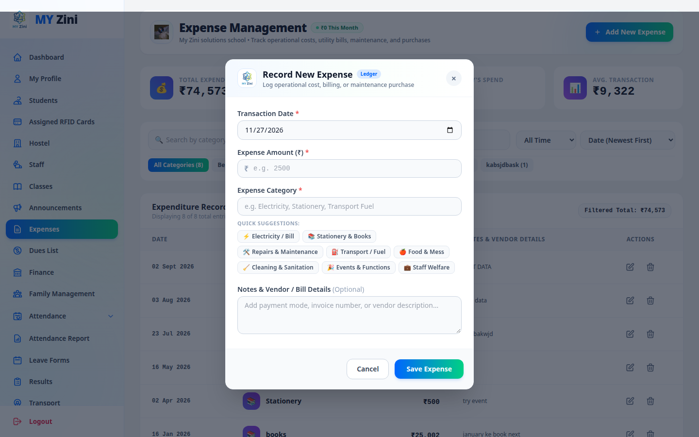
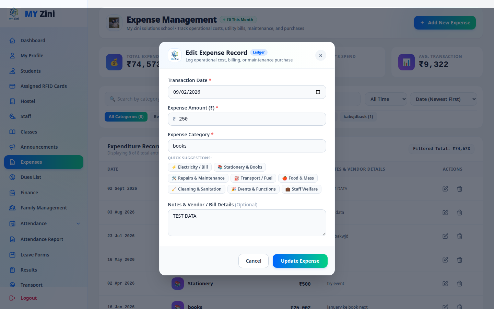
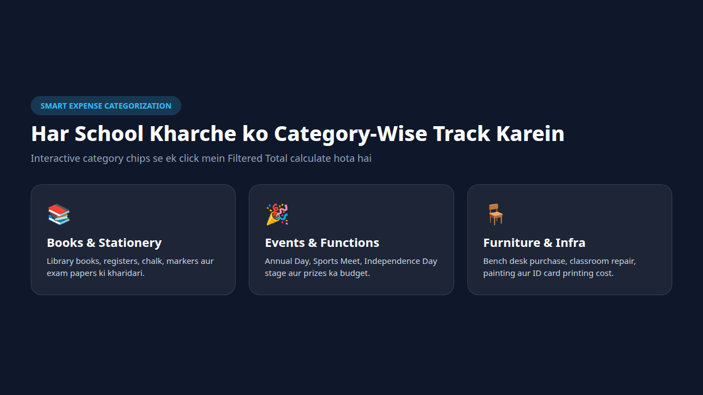
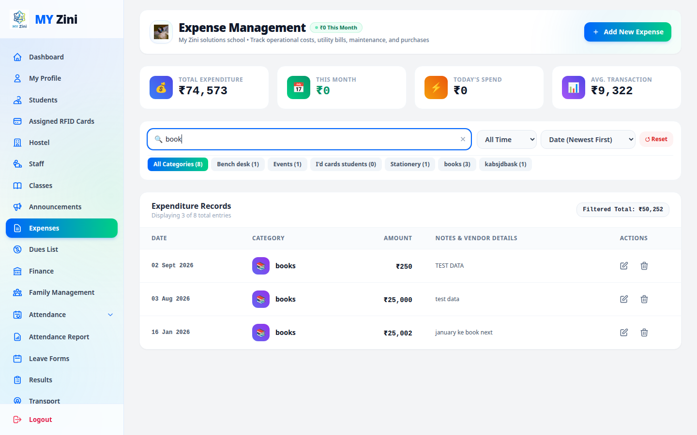
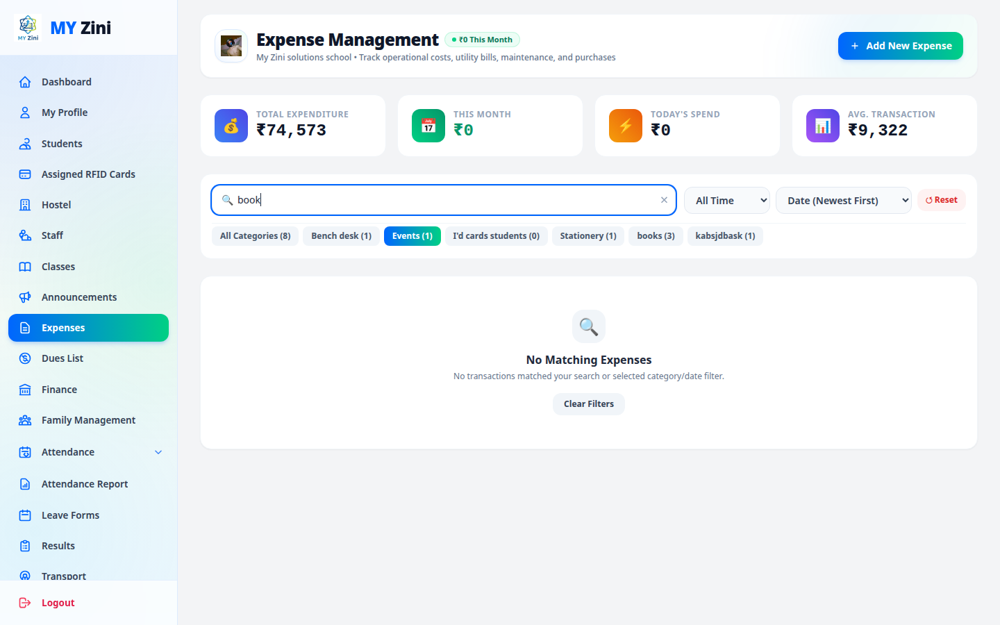
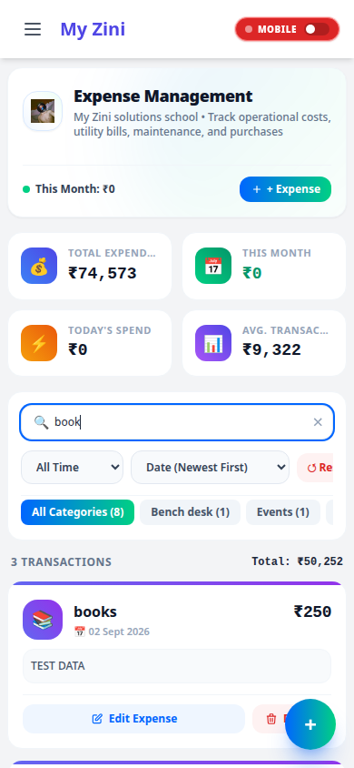
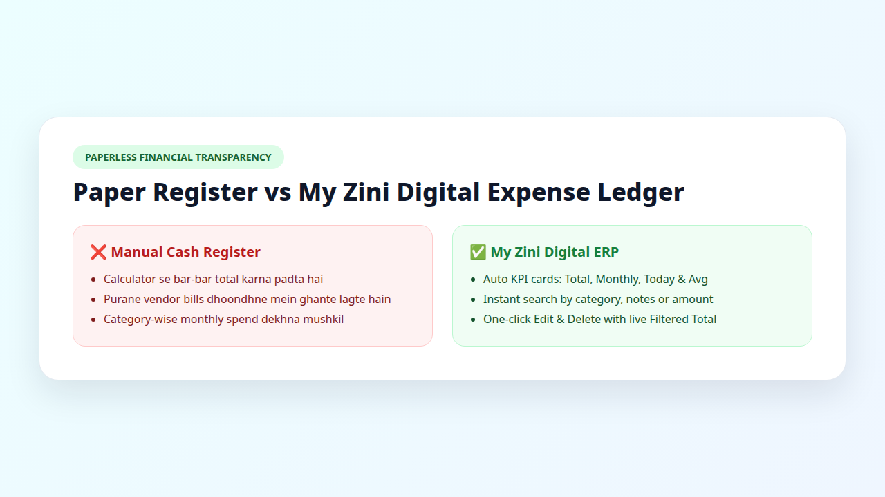

My Zini Digital ERP mein School Expenses aur Daily Kharcha Kaise Track Karein? (Complete Hinglish Guide)
Har school, coaching institute aur college mein rozana chhote-bade kharche hote rehte hain — kabhi bijli ka bill, kabhi stationery aur library books, kabhi bus diesel, toh kabhi bench-desk ya annual event ka kharcha. Agar in sabka hisab paper register mein rakha jaaye, toh mahine ke end mein audit aur total nikalne mein bahut time lagta hai. Isi samasya ko khatam karne ke liye My Zini Digital ERP mein dedicated Expense Management (/expenses) module diya gaya hai. Is guide mein humne live portal par har button, modal, 9 Quick Suggestions, filters aur sorting ko test karke poora step-by-step Hinglish tutorial तैयार kiya hai.

⚡ TL;DR — Quick Summary (AI & Reader Snapshot)
- Route: Sidebar mein
Expenses(https://myzini.digitalerp.shop/expenses). - 4 Live KPI Cards: Total Expenditure (e.g. ₹74,573), This Month, Today's Spend, aur Avg. Transaction.
- Add New Expense Modal:
Transaction Date *,Expense Amount (₹) *,Expense Category *, 9 Quick Suggestions chips (Electricity, Stationery, Repairs, Fuel, Mess, Cleaning, Events, Staff Welfare, Internet), aurNotes & Vendor / Bill Details (Optional). - Smart Search & Filters: Search box (category/notes/amount), Date Range dropdown (5 presets), Sort dropdown (4 modes), aur clickable Category filter chips with live
Filtered Total. - Row Actions: Har record par instant
Edit ExpenseaurDeletebuttons milte hain.
1. Expense Management Page Overview aur 4 Live KPI Cards
Jaise hi aap My Zini Digital ERP ke left sidebar se Expenses par click karte hain, aapke saamne Expense Management dashboard khul jaata hai. Top header par aapke school ka naam (jaise My Zini solutions school • Track operational costs, utility bills, maintenance, and purchases), current month ka badge (e.g. ₹0 This Month), aur right side mein bright blue Add New Expense button dikhai deta hai.
Header ke bilkul neeche aapko 4 powerful KPI summary cards milte hain jo har nayi entry ya edit ke saath automatically update hote hain:
💰 TOTAL EXPENDITURE
School ki shuruwat se lekar ab tak ka total recorded kharcha (jaise live demo mein ₹74,573).
📅 THIS MONTH
Sirf current calendar month mein hue saare expenses ka live sum, taaki monthly budget control mein rahe.
⚡ TODAY'S SPEND
Aaj ke din mein cash ya online se kitna kharcha hua, woh Principal ko turant dikh jaata hai.
📊 AVG. TRANSACTION
Har bill ya voucher ki average value (jaise 8 entries par ₹9,322) — financial analysis ke liye best metric.

2. Add New Expense: Naya Kharcha Kaise Record Karein? (9 Quick Suggestions)
Naya kharcha add karne ke liye aap page par kisi bhi jagah se 3 tareekon se form khol sakte hain: top-right mein Add New Expense button, chhota + Expense button, ya screen ke bottom-right corner mein floating + button. Isse Record New Expense (Ledger) modal khul jaata hai.

Record New Expense modal ke andar aapko neeche diye gaye exact fields aur options milte hain:
- Transaction Date * (Required): HTML date picker jo default roop se aaj ki tarikh par set rehta hai. Agar aap pichhle kisi din ka bill enter kar rahe hain, toh calendar se purani date bhi select kar sakte hain.
- Expense Amount (₹) * (Required): Number field (placeholder:
e.g. 2500) jisme aap exact rupee amount enter karte hain. - Expense Category * (Required): Text input (placeholder:
e.g. Electricity, Stationery, Transport Fuel) jisme aap apni marzi ki category type kar sakte hain — ya neeche diye gaye 9 Quick Suggestions mein se kisi par ek click karke auto-fill kar sakte hain:⚡ Electricity / Bill 📚 Stationery & Books 🛠️ Repairs & Maintenance ⛽ Transport / Fuel 🍎 Food & Mess 🧹 Cleaning & Sanitation 🎉 Events & Functions 💼 Staff Welfare 🌐 Internet / Tech - Notes & Vendor / Bill Details (Optional): Multi-line textarea (placeholder:
Add payment mode, invoice number, or vendor description...) jahan aap dukaan ka naam, invoice number, UPI/Cash mode, ya remarks likh sakte hain. - Save Expense / Cancel: Sabhi details bharne ke baad Save Expense dabate hi entry turant database mein save ho jaati hai aur KPI cards update ho jaate hain.

3. Expenditure Records Table, Edit Expense aur Delete Controls
Filters ke neeche Expenditure Records table hoti hai jiske header par aapko Displaying 8 of 8 total entries aur right side mein green badge Filtered Total: ₹74,573 dikhta hai. Table mein 5 clear columns hote hain:
| Column Name | Kya Dikhata Hai? | Example Value |
|---|---|---|
| DATE | Formatted transaction date | 02 Sept 2026, 16 May 2026 |
| CATEGORY | Smart emoji icon ke saath category badge | 📚 books, 🎉 Events, 💳 Bench desk |
| AMOUNT | Formatted INR currency amount | ₹25,002, ₹10,000, ₹500 |
| NOTES & VENDOR DETAILS | Bill number, vendor ya remark text | january ke book next, try event |
| ACTIONS | Edit Expense aur Delete buttons | Instant edit modal ya delete confirm |

4. Smart Search, Date Range, Amount Sorting aur Category Filter Chips
Jab aapke school mein saikdon expense entries ho jaati hain, toh kisi ek bill ko dhoondhna ya kisi mahine ka audit karna bahut zaroori hota hai. My Zini Digital ERP mein iske liye 4-layer filtering system diya gaya hai:
- Live Search Box: Placeholder
Search by category, notes, or amount...— aap jaise hibooksya koi amount type karte hain, table turant filter ho jaati hai aur Filtered Total usi hisab se recalculate ho jaata hai. - Date Range Dropdown (5 Options):
All Time,This Month,Last Month,Past 7 Days, aurToday Only. Audit ya monthly closing ke waqt sirf ek click mein Last Month ka poora kharcha saamne aa jaata hai. - Sort Order Dropdown (4 Options):
Date (Newest First),Date (Oldest First),Amount (High to Low), aurAmount (Low to High). Sabse bade kharche top par dekhne ke liye Amount (High to Low) best option hai. - Dynamic Category Filter Chips: Jitni bhi categories aapne add ki hain, unki automatic pill chips count ke saath upar ban jaati hain — jaise
All Categories (8),Bench desk (1),Events (1),Stationery (1),books (3). Kisi bhi chip par click karke aap us category ka alag total dekh sakte hain.



5. Mobile, Tablet aur Laptop Responsive View + Audit Benefits
Chahe school accountant office laptop par kaam kar rahe hon ya Principal apne smartphone se bahar travel karte hue daily kharcha check kar rahe hon, /expenses module har screen size (390px mobile se 1440px desktop) par cleanly adjust ho jaata hai. Mobile screen par KPI cards 2-column grid mein aur action buttons thumb-friendly size mein dikhte hain.


Quick Reference Table: /expenses Module Cheat Sheet
| Feature / Option | Exact UI Control | Best Use Case |
|---|---|---|
| KPI Cards | Total Expenditure, This Month, Today's Spend, Avg. Transaction | Principal ke liye 2-second financial health check |
| Quick Suggestions | 9 one-click category chips inside Add Modal | Fast data entry bina spelling mistakes ke |
| Date Range Filter | All Time, This Month, Last Month, Past 7 Days, Today Only | Monthly closing aur weekly cash reconciliation |
| Sort Dropdown | Date (Newest/Oldest) & Amount (High/Low) | Sabse bade expenses ko turant spot karna |
| Vendor Notes | Notes & Vendor / Bill Details (Optional) | Invoice number aur UPI/Cash mode record rakhna |
Frequently Asked Questions (FAQs)
1. Kya hum 9 Quick Suggestions ke alawa apni custom expense category bana sakte hain?
Haan bilkul! Expense Category * ek smart text field hai. Aap chahein toh Quick Suggestions par click karein ya apni custom category jaise Bench desk, Generator Diesel, ya ID Cards Printing directly type kar sakte hain. Save karte hi uska alag filter chip automatically list mein ban jaata hai.
2. Agar galti se galat amount ya date enter ho jaaye toh kya karein?
Har table row ke ACTIONS column mein Edit Expense aur Delete buttons diye gaye hain. Edit par click karke aap Date, Amount, Category ya Vendor Notes ko kabhi bhi sudhar sakte hain, aur top ke KPI cards turant recalculate ho jaate hain.
3. Filtered Total aur Total Expenditure mein kya farq hai?
Total Expenditure card hamesha aapke poore school ke sabhi recorded expenses ka grand total dikhata hai. Wahin table ke upar dikhne wala Filtered Total sirf unhi entries ka sum dikhata hai jo aapne Search, Date Range ya Category chip se filter ki hain.
4. Kya Staff Salary bhi isi Expenses module mein add karni chahiye?
Staff ki monthly salary aur absent/late deductions manage karne ke liye My Zini ERP mein alag se dedicated Staff Management (/staff) aur Finance (/finance) modules maujood hain. Expenses module specially operational bills, purchases, maintenance, transport fuel, events aur vendor payments ke liye banaya gaya hai.
5. Search box mein kis-kis cheez se search kar sakte hain?
Search input mein aap 3 cheezon se search kar sakte hain: Category name (e.g. books, Events), Notes / Vendor details (e.g. invoice number ya vendor ka naam), ya Amount (e.g. 25000).
6. Kya pichhle mahine ya pichhle saal ke bills bhi record kiye ja sakte hain?
Haan, Transaction Date * field mein aap koi bhi past date select kar sakte hain. Isse agar aap apna purana paper khata digital ERP mein shift kar rahe hain, toh purane saare vouchers exact dates ke saath feed kiye ja sakte hain.
7. Vendor Notes field mein kya likhna best rehta hai?
Audit ke liye sabse achha format hai: Vendor Name + Bill/Invoice No. + Payment Mode. Jaise: Sharma Book Depot | Inv #402 | Paid via UPI. Isse saal ke end mein CA audit ya school committee review ke waqt har rupaye ka proof ek second mein mil jaata hai.
8. School mein petty cash (chhote rozana kharche) kaise manage karein?
Roz shaam ko office clerk sirf 2 minute nikal kar chai-pani (Staff Welfare), chalk/duster (Stationery & Books), ya safai saman (Cleaning & Sanitation) ki entries Today's Spend ke andar daal sakte hain. Isse petty cash mein ek rupaye ka bhi mismatch nahi hota.
9. Apne school ke liye My Zini Digital ERP kaise shuru karein?
Aap Digital ERP Registration Form par jaakar sirf ₹100 Registration Fee ke saath apna school register kar sakte hain aur aaj hi digital expense tracking shuru kar sakte hain.
10. Kya Expense Management mein GST ya invoice number record karne ki suvidha hai?
Haan! Notes & Vendor / Bill Details (Optional) textarea specially isi liye banaya gaya hai. Jab bhi aap kisi vendor se stationery, furniture, electronics ya books kharidein, toh aap usme vendor ka naam, GST bill ya invoice number, aur payment method (UPI, NEFT, Cheque ya Cash) detail mein likh sakte hain. Baad mein jab aap search box mein invoice number ya vendor ka naam type karenge, toh turant wahi exact entry screen par aa jaayegi.
11. Avg. Transaction KPI card school management ko kaise madad karta hai?
Avg. Transaction card poore recorded expenditure ko total entries se divide karke aapko average bill size dikhata hai. Agar kisi mahine aapka average transaction achanak bahut badh jaata hai, toh Principal turant Amount (High to Low) sort lagakar check kar sakte hain ki kaunse bade capital ya maintenance bills us mahine paas hue hain.
12. Kya Delete button dabane par entry bina confirmation ke delete ho jaati hai?
Nahi, galti se data delete na ho iske liye system safety checks ke saath kaam karta hai. Saath hi agar aap kisi entry ko hatane ke bajaye sirf amount ya category badalna chahte hain, toh hamesha Edit Expense button ka use karna zyada behtar hota hai taaki audit trail saaf-suthri bani rahe.
13. Kya ek se zyada branches ya departments ke kharche alag-alag track ho sakte hain?
Bilkul! Aap category naming ya vendor notes mein department tag (jaise Primary Wing Stationery, Hostel Mess Ration, ya Bus #2 Diesel) use kar sakte hain. Phir Category filter chips aur Live Search ki madad se aap kisi bhi wing ya department ka alag Filtered Total ek second mein nikal sakte hain.
14. Mahine ke end par Principal ko kaunse 3 filters zaroor check karne chahiye?
Har mahine ki 1 tarikh ko pichhle mahine ka audit karne ke liye: (1) Date Range dropdown ko Last Month par set karein aur Filtered Total note karein, (2) Sort dropdown ko Amount (High to Low) par set karke top 5 sabse bade kharche verify karein, aur (3) Har major Category chip (jaise Electricity, Fuel, Stationery) par click karke category-wise budget comparison karein.
15. Kya School Expense Management Mobile Phone se bhi utna hi aasani se chalaya ja sakta hai?
Haan, bilkul! /expenses module poori tarah mobile, tablet aur laptop responsive hai. Agar Principal ya Accountant kisi market se school ke liye stationery ya electronics kharid rahe hain, toh woh wahi dukaan par khade-khade apne mobile browser mein My Zini Digital ERP kholkar bottom-right floating + button daba kar 15 seconds mein bill record kar sakte hain.
16. School Expenses aur Fee Collection (Finance) ka data ek saath kaise compare karein?
Aap Finance (/finance) module mein jaakar total fee collection aur daily inflow dekh sakte hain, aur Expenses (/expenses) mein This Month aur Total Expenditure check karke dono ka net balance (Income minus Expenses) aasani se nikal sakte hain. Isse school management ko har mahine clear profit-loss aur cashflow visibility milti hai.
Real School Scenarios: Expense Management ka Daily Use
1. Monthly Electricity & Internet Bills
Har mahine ⚡ Electricity / Bill aur 🌐 Internet / Tech chips use karke bijli aur Wi-Fi bills save karein, aur Last Month filter se pichhle mahine ke bill se compare karein.
2. School Bus Diesel & Maintenance
Transport in-charge ⛽ Transport / Fuel category mein har diesel slip aur bus servicing ka kharcha vehicle number ke saath notes mein record kar sakte hain.
3. Annual Function & Sports Day Budget
Poore function ke tent, sound, trophy aur refreshment bills ko 🎉 Events & Functions category mein daalein — Filtered Total se turant pata chal jaayega ki event total kitne mein hua.
4. Classroom Furniture & Repairs
Naye bench-desk ya building painting ka kharcha 🛠️ Repairs & Maintenance mein invoice details ke saath save karein taaki management ko clear capital expenditure report mile.
Pro Tip: Har Friday shaam ko Past 7 Days filter lagakar poore hafte ke expenses ka Filtered Total zaroor check karein. Isse koi bhi pending bill ya duplicate entry usi week pakad mein aa jaati hai aur mahine ke end par zero tension rehti hai.